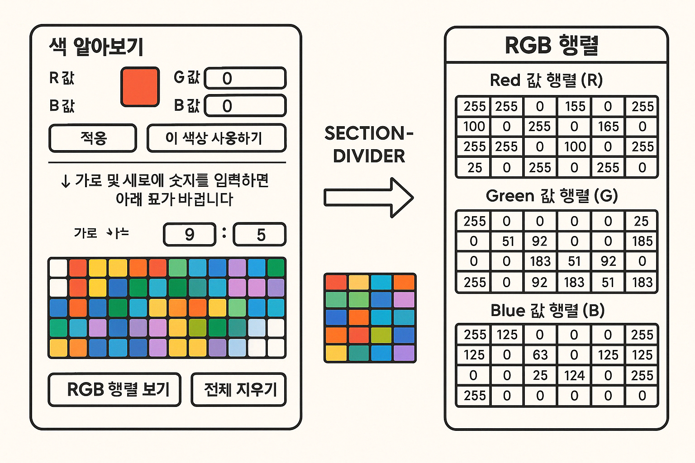

이미지 수업 · 색과 이미지
RGB 데이터 탐구
화면의 색은 R·G·B 세 숫자예요. 먼저 픽셀을 칠하며 색이 숫자로 바뀌는 걸 보고,
이어서 색 게임으로 직접 확인해 봐요.

본 활동
픽셀 에디터 & RGB 행렬
칸을 칠하고 클릭하며 각 픽셀이 어떤 R·G·B 값으로 이루어지는지 확인하고, 그림 전체를 RGB 행렬로 뽑아 봅니다.
시작하기
더 해 보기
본 활동 뒤에 이어서 하는 색 활동
색 섞기 대전
물감으로 섞을 때와 빛으로 섞을 때, 결과가 어떻게 다른지 맞혀요.
색감 실험실
색이 조금 다른 한 칸을 찾아요. R·G·B 중 눈이 가장 예민한 색은?
RGB 색 맞추기
R·G·B 슬라이더를 움직여 화면에 나온 색과 똑같이 만들어요.
퍼스널컬러 진단
얼굴 사진 속 피부·눈·머리 색의 RGB 값으로 나에게 어울리는 색 타입을 추정해요.